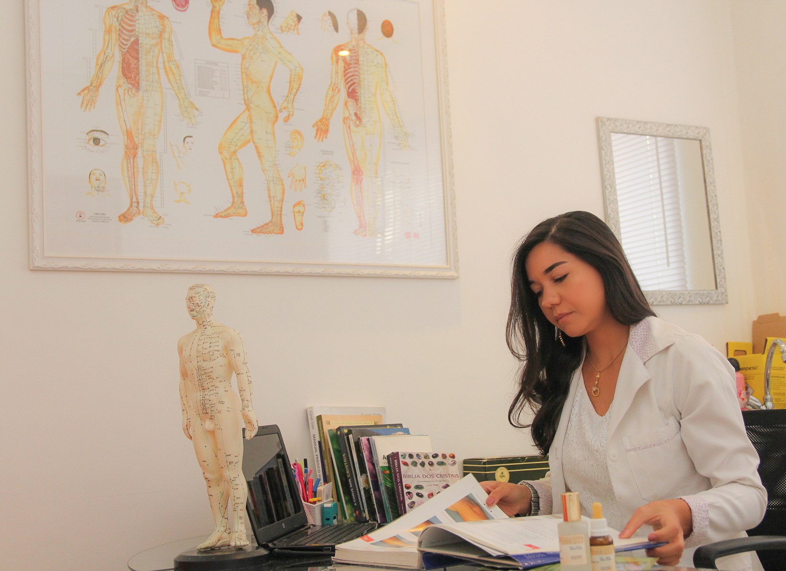

Mariana Alves Acupuntura
O tratamento com acupuntura e cristais equilibra as energias do nosso corpo e da mente, uma vez que, a energia circula livremente no corpo, através de canais de energia, os chamados meridianos, esse tratamento vai balancear e restaurar a saúde. Especialmente porque trabalha para ajudar no equilíbrio físico , mental e emocional ....